How to integrate Jira with Slack
issue 발생 시 Slack Notification 처리 방법
Jira 작업
-
설정->앱 을 선택한다. 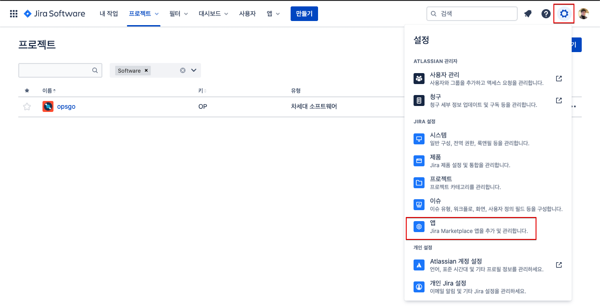
-
slack 을 검색하고, 결과에서 Slack Jira Integration을 클릭한다. 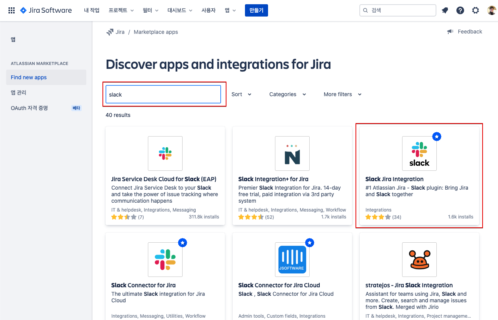
-
Slack Jira Integration 설치 화면이 나타난다. 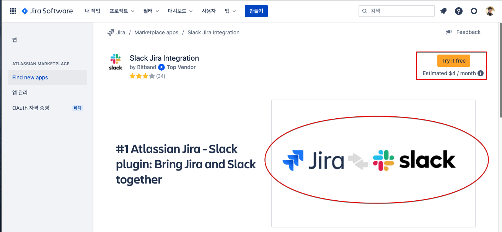
-
설치 를 클릭한다. 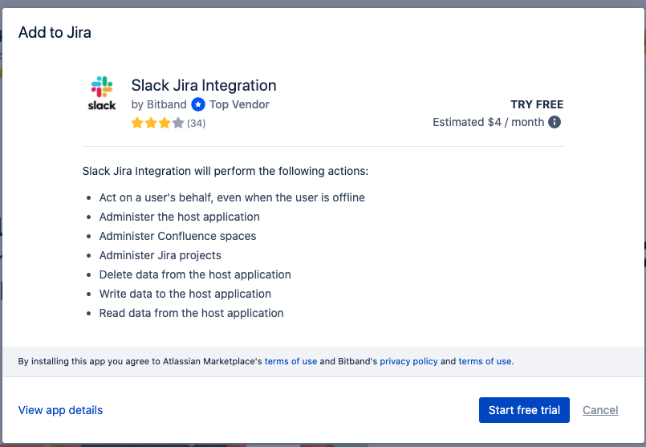
-
상단에 설치가 진행되고 있음을 팝업으로 보여준다. 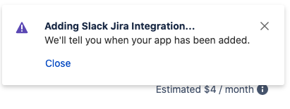
-
설치가 완료되었음을 팝업으로 보여준다. 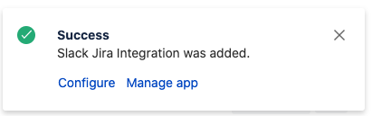
-
Slack Integration을 선택한다. 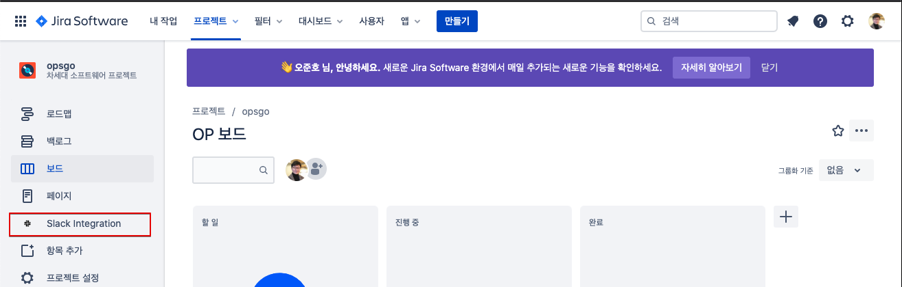
-
Sign in with Slack을 클릭한다. 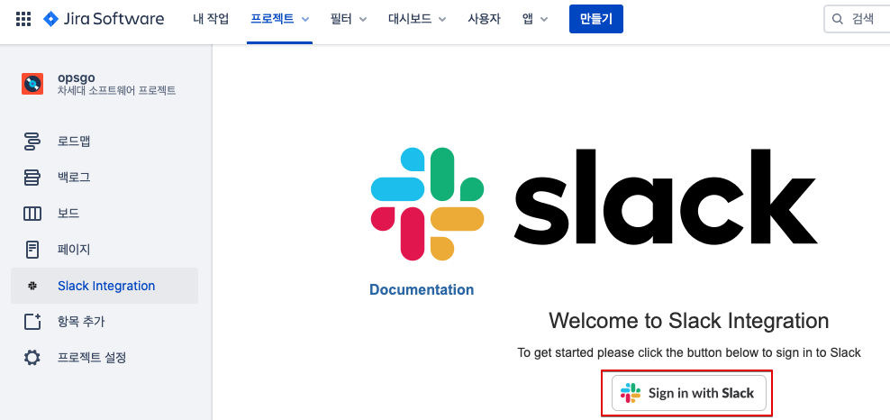
Slack 작업
Jira로부터 알림을 받을 워크스페이스를 생성한다.
-
이메일 입력 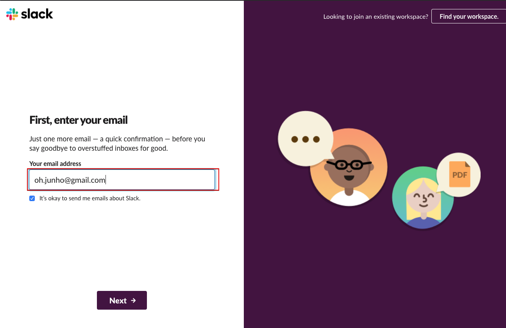
-
이메일로 전달된 Confirm 코드를 입력한다. 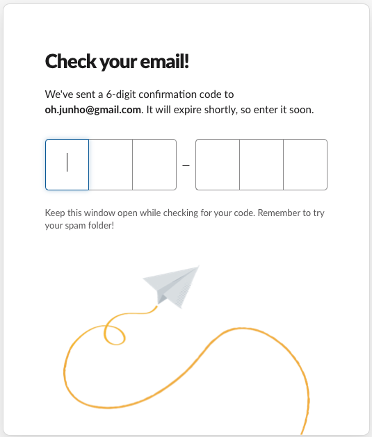
-
회사명 또는 팀 이름을 입력한다. 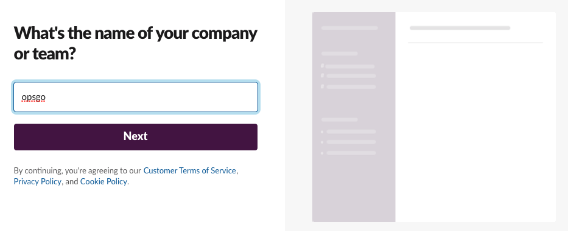
-
Workspace 이름을 지정한다. 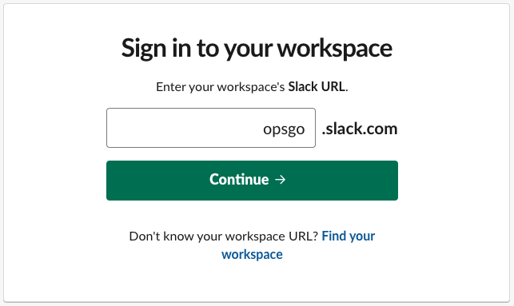
-
퍼미션 설정을 하고 Allow를 클릭한다. 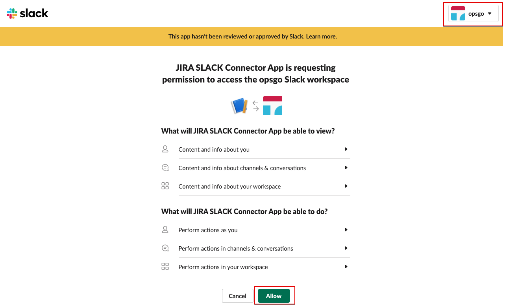
Jira 작업
Slack으로 전달할 항목을 지정한다.
-
Slack과 연결된 Workspace를 확인한다. 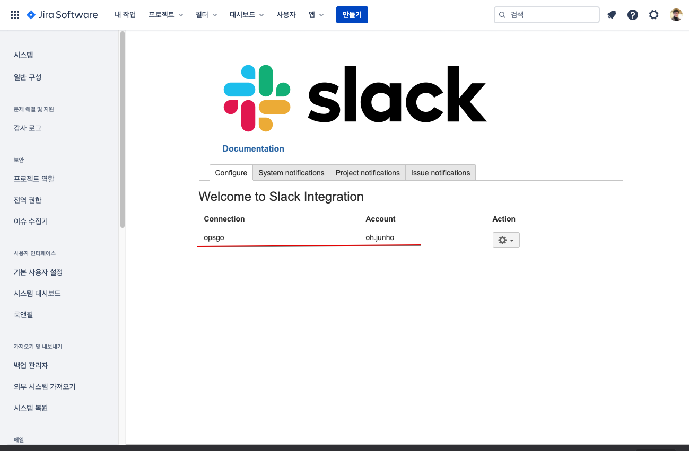
-
Project notifications 탭을 선택하고 Create를 클릭한다. 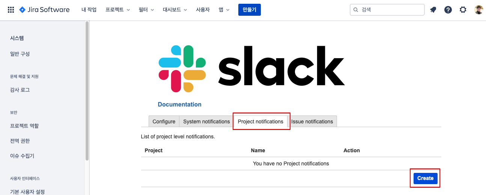
-
Slack 채널을 선택하고 채널로 전달할 때 사용할 토픽을 지정한다. 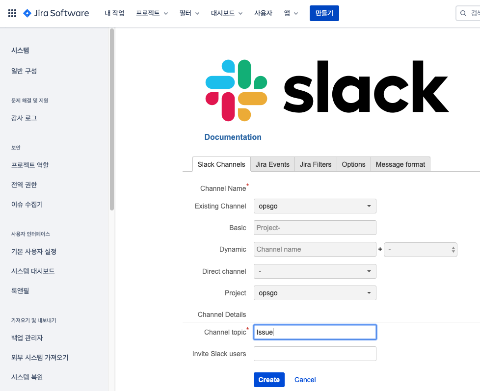
Slack App
- Jira작업에 따라 Slack Workspace연결과 channel이 Issue라는 토픽으로 연결 되었음이 나타난다. 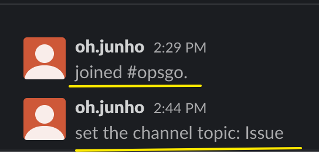
Jira 작업
- Jira에서 이슈를 생성한다. 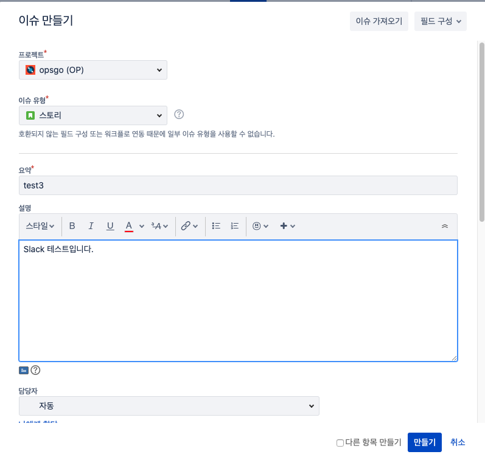
Slack App
- opsgo 채널로 정상적인 notification이 전달됨을 확인할 수 있다. 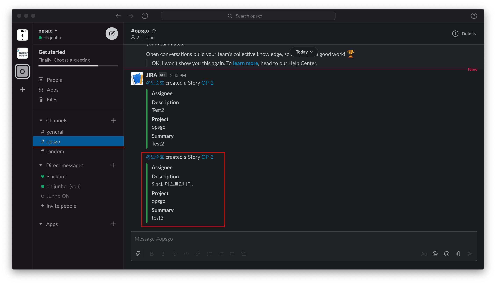